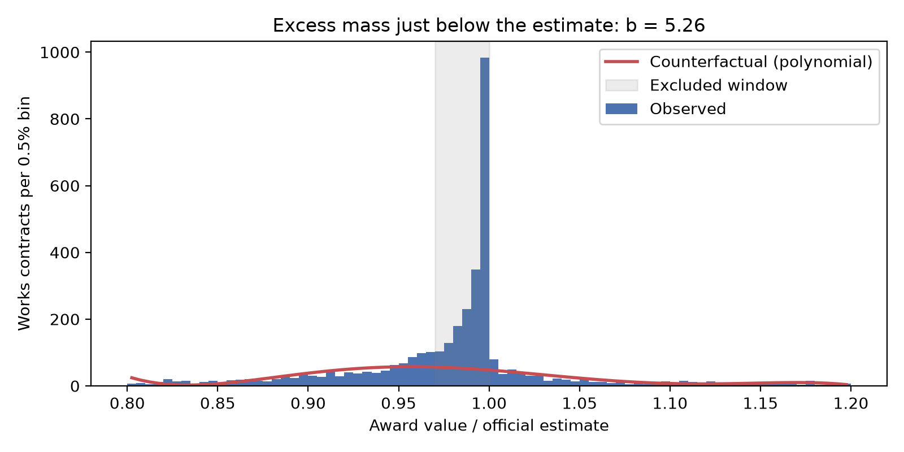
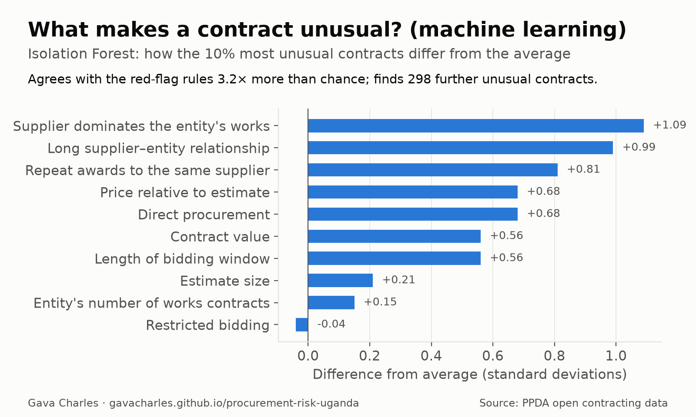

An open-source, explainable risk monitor that reads the public procurement record and helps auditors decide where to look. It flags suspicious tenders, suppliers and bidder groups, ranks contracts for audit, and points to ways procurement could move faster without weakening integrity.
These are statistical risk indicators that call for review. They are not findings of wrongdoing against any entity or firm, and no firm is named on this site.
1,976 works contracts were awarded at 97–100% of the entity's estimate, where a smooth distribution predicts about 316. The excess holds under open competitive bidding (4.5×) and in all 24 robustness specifications we ran (3.4× to 12×). Possible causes are leaked estimates, estimates revised after award, or bidders anchoring on a published budget.

Identical groups of firms that bid together in 3+ procurements while the win passes between members. The largest group of three firms bid together 255 times for a single entity.
Near-identical contracts from the same entity, awarded within 60 days without open bidding or to the same supplier. Found by text similarity (NLP) across 13 entities.
24,707 supplier IDs collapse to 16,561 firms once spelling variants are merged. That has to be fixed before suppliers can be monitored reliably.
Three findings, animated. Each comes from a different branch of mathematics.

The map places 4,096 public works contracts (about 70% of all works value) in Uganda's 135 districts. Contracts procured by district, municipal and city councils sit in their own district. Contracts procured by central bodies (UNRA, ministries, NWSC and others) are placed using the place names in their titles. Pick a question, a measure, a year and a sector, then click a district.
Boundaries (2020) and population (2022 projection): Uganda Bureau of Statistics, via geoBoundaries and HDX (CC BY-IGO). Base map © OpenStreetMap contributors.
The project began with a concept note proposing a specific toolkit of mathematics, data science and machine learning. The table maps each proposed principle to what it does in the system, where it lives in the open-source code, and whether it is built yet.
| Proposed principle | What it does here | Code | Status |
|---|---|---|---|
| Statistics & statistical inference | Bunching estimator with bootstrap confidence intervals detects the excess of awards just below the estimate; robust outlier tests (median absolute deviation) find abnormal contract values; 24 robustness and 4 placebo tests. | analysis.pyred_flags.py | ● Built |
| Benford's Law | First-digit test of each entity's award values (mean absolute deviation vs. Benford); the 10% of entities that deviate most are flagged. | red_flags.py | ● Built |
| Graph theory & network science | Co-bidding network (553 construction firms, 1,333 links); Louvain community detection finds closed bidder clusters; repeated bidder groups and rotating winners. | network.py | ● Built |
| Linear algebra: spectral analysis | The network is a weighted adjacency matrix. Its leading eigenvector (eigenvector centrality) ranks the most influential firms in each component. | network.py | ● Built |
| Calculus & optimisation | Audit-plan optimiser: a 0–1 knapsack that picks the contracts covering the most value at risk within a set number of auditor-days. A polynomial counterfactual (least squares) is used in the bunching estimator. | app.pyanalysis.py | ● Built |
| Machine learning: unsupervised | An Isolation Forest learns what a normal works contract looks like across 10 features. Its top 10% overlaps the rule-based top 10% by 32% (3× chance; ρ = 0.31), and it surfaces 298 further anomalies, driven mainly by supplier dominance and long-standing supplier–entity ties. | ml_models.py | ● Built |
| Natural language processing | (1) A title classifier identifies construction works, since the data has no category field. (2) TF-IDF text similarity finds near-identical contracts split across awards. Next: extracting audit findings from Auditor General reports. | classify.pyml_models.py | ● Built / ◐ next |
| Machine learning: supervised | A model estimating the probability that a contract or supplier is fraudulent. It needs labelled cases (Auditor General and Inspectorate of Government findings). The 43 PPDA suspensions are too few, and mostly document forgery. | — | ◐ Planned |
| Probability & measure theory | Risk scores and the audit model treat risk as a probability proxy; bootstrap resampling gives the sampling distribution of the bunching estimate. A calibrated probability needs the supervised model. | analysis.py | ◐ Partly |
| Number theory & finite fields | Blind bid evaluation: bidders get anonymous codes via modular exponentiation in a 2048-bit prime field. A private conflict-of-interest check lets two offices find overlapping firms without revealing their lists (commutative encryption). Try it below. | blind_eval.py | ● Built (prototype) |
| Combinatorics | Enumerating bidder-pair combinations to build the network and identify identical bidder sets. | network.pyred_flags.py | ● Built |
Bid evaluation should judge bids, not bidders. Enter some bidder names and a tender ID. Your browser hashes each name into the group of quadratic residues modulo a 2048-bit safe prime p (RFC 3526), raises it to a secret key k (y = h(name)k mod p), and turns the result into a code name. The evaluation committee would see only the code names. The same firm gets a different code on every tender, so it can't be tracked across tenders, and without k the code reveals nothing about the name.
Runs entirely in your browser; nothing is sent anywhere. A fresh secret key is drawn each time you load the page.
Using PPDA's own process dates, a typical works procurement takes about 6–7 weeks from invitation to award (median 46 days; 28 of them after bids close). But the award only appears on the public portal a median of 101 days after it is made, and 82% of works tenders are entered on the portal only after the contract has been awarded. The public record arrives too late for anyone to act on it while it matters.
Real-time publication. If each stage were published as it happens (invitation, bid opening, evaluation, award), red flags could be raised before contracts are signed, not months later.
Risk-based processing. Low-risk procurements (no red flags) already move about as fast as medium-risk ones (31 vs 25 days after bids close); high-risk ones take longer (about 52 days). A fast lane with automated document checks for the clean majority, and closer scrutiny for the high-risk few, would focus effort where it matters.
Correction (10 Nov 2026). An earlier version of this page said a works procurement takes a median of 206 days. That figure used the date an award was recorded on the portal, not the date it was made. Checked against PPDA's own process dates (a random sample of about 5,000 tender records), the procurement itself takes about 6–7 weeks; the remaining months are reporting delay. The figures above are corrected.
Every works contract ranked by risk weighted by value, with the reasons it was flagged.
Picks the contracts that cover the most value at risk within a set number of auditor-days.
Repeated bidder groups, rotating winners, co-bidding networks and name-variant bidders.
Concentration, method use, single-bid rates and Benford's Law checks.
We tested the flags against providers that PPDA has suspended, and they did not score higher. Most of those suspensions (36 of 43) were for forged documents, which price and competition screens can't see. A complete system needs automated document verification alongside statistical screens.
Bunching at the Estimate: Red-Flag Evidence of Integrity Risk in Uganda's Public Works Procurement
Faster and Cleaner? Risk-Based Oversight and Procurement Cycle Times in Uganda's Public Works
Gava Charles: project concept, research design and direction. The project grew out of the concept note proposing a mathematical and machine-learning toolkit (number theory, linear algebra, graph theory, optimisation, statistics and ML) to help oversight institutions minimise losses from procurement fraud. It starts with Uganda's construction sector as the case study.
To cite: Gava Charles (2026). Procurement Risk Monitor: Uganda public works case study [software and data analysis]. https://github.com/gavacharles/procurement-risk-uganda